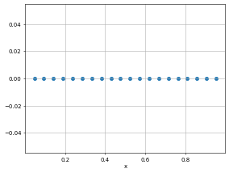
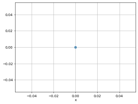
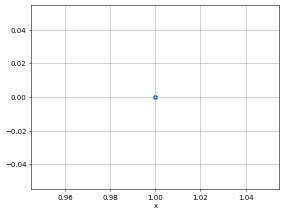

Training dataset#
# This is only valid when the package is not installed
import sys
sys.path.append('../../') # two folders up
import DeepINN as dp
Using default backend: PyTorch
Using Pytorch: 2.0.1+cu117
Geometry#
# A simple 1D geometry
X = dp.spaces.R1('x')
Line = dp.domains.Interval(X, 0, 1)
import torch
left_bc = dp.constraint.DirichletBC(geom = Line,
function = lambda X: torch.tensor([0.0]),
sampling_strategy = "grid",
no_points = 1, # you can use more points. there are conditions to deal with stupid conditions.
filter_fn = lambda x: x[:] == 0.0)
right_bc = dp.constraint.DirichletBC(geom = Line,
function = lambda X: torch.tensor([1.0]),
sampling_strategy = "grid",
no_points = 1, # you can use more points. there are conditions to deal with stupid conditions.
filter_fn = lambda x: x[:] == 1.0)
interior_points = dp.constraint.PDE(geom = Line,
sampling_strategy= "grid",
no_points = 20)
# debugging
interior_points.sampler_object().sample_points().as_tensor.size(), left_bc.sampler_object().sample_points().as_tensor.size(), right_bc.sampler_object().sample_points().as_tensor.size()
/home/hell/Desktop/repos/DeepINN/Tutorials/4. Dataset/../../DeepINN/geometry/samplers/grid_samplers.py:78: UserWarning: First iteration did not find any valid grid points, for
the given filter.
Will try again with n = 10 * self.n_points. Or
else use only random points!
warnings.warn("""First iteration did not find any valid grid points, for
(torch.Size([20, 1]), torch.Size([1, 1]), torch.Size([1, 1]))
# debugging
interior_points.sample_labels(interior_points.sampler_object().sample_points().as_tensor).unsqueeze(1).size()
torch.Size([20, 1])
temp = left_bc.sampler_object().sample_points().as_tensor.size()
temp
torch.Size([1, 1])
dp.utils.scatter(X, interior_points.sampler_object(), dpi = 50)
dp.utils.scatter(X, left_bc.sampler_object(), dpi = 50)
dp.utils.scatter(X, right_bc.sampler_object(), dpi = 50)



1D Laplace equation#
def laplace(X,y):
"""
1D Laplace equation.
u__x = 0
"""
dy_x = dp.constraint.Jacobian(X, y)
dy_xx = dp.constraint.Jacobian(X, y)(i = 0, j = 0)
return dy_xx
Dataset#
dataset = dp.domain.Generic(laplace,
interior_points,
[left_bc, right_bc])
# Don't use this function. collocation_point_labels() returns both inputs and labels
collocation_point_sample = dataset.sample_collocation_points()
collocation_point_sample.size()
torch.Size([20, 1])
collocation_point_sample, collocation_point_labels = dataset.sample_collocation_labels()
collocation_point_sample.size(), collocation_point_labels.size()
(torch.Size([20, 1]), torch.Size([20, 1]))
# Don't use this sample_boundary_labels() returns both inputs and labels
boundary_point_sample = dataset.sample_boundary_points()
boundary_point_sample
[tensor([[0.]]), tensor([[1.]])]
boundary_point_sample, boundary_point_labels = dataset.sample_boundary_labels()
len(boundary_point_sample), len(boundary_point_labels)
(2, 2)
boundary_point_labels
[tensor([[0.]]), tensor([[1.]])]
boundary_point_labels[0].size()
torch.Size([1, 1])
boundary_point_sample[0].requires_grad = True
# y is the output neuron of a hypothetical neural network
# the output and the input should be connected to the graph to enable chain rule.
y = boundary_point_sample[0] + boundary_point_labels[0]
laplace(boundary_point_sample[0],y)
tensor([[1.]])